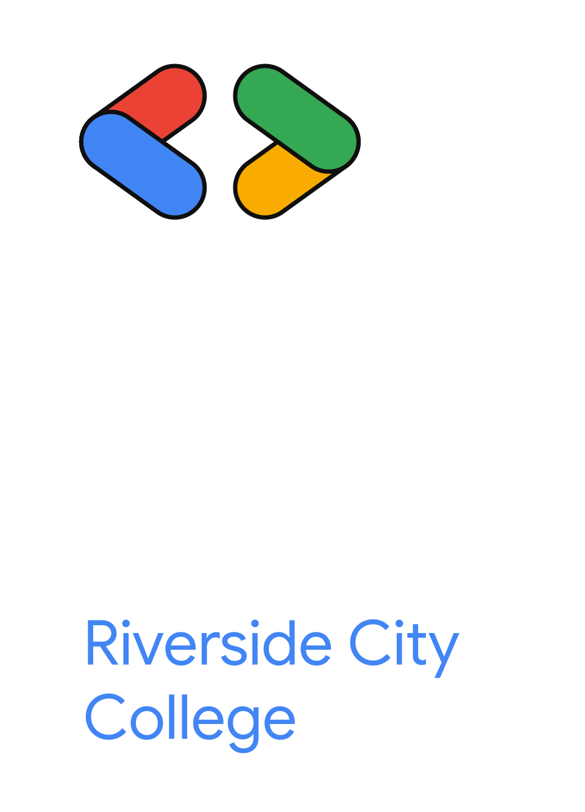

GDG on Campus Riverside City College is an independent group; our activities and the opinions expressed here should in no way be linked to Google, the corporation.
Attendance
Sign in with the Google account your admin added.
Checking your Google sign-in.
Staff pages
- Attendance (this page)Scan passes and see who checked in.
- Ask a question or start a voteRun quizzes and votes during class.
- AdminAdd staff and pair door iPads. Admins only.